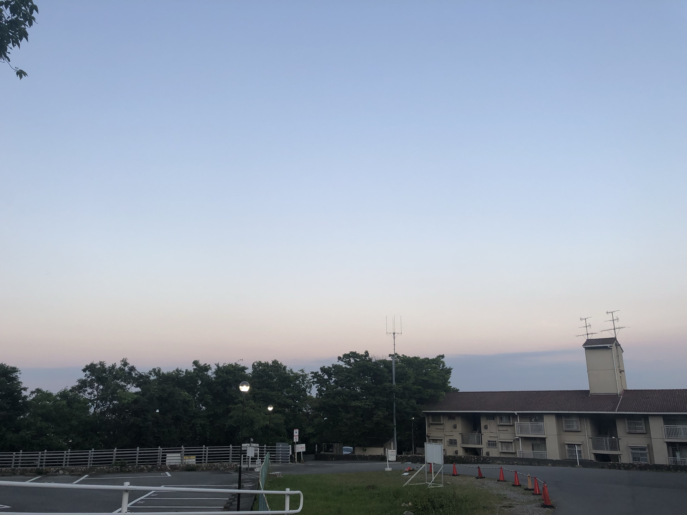
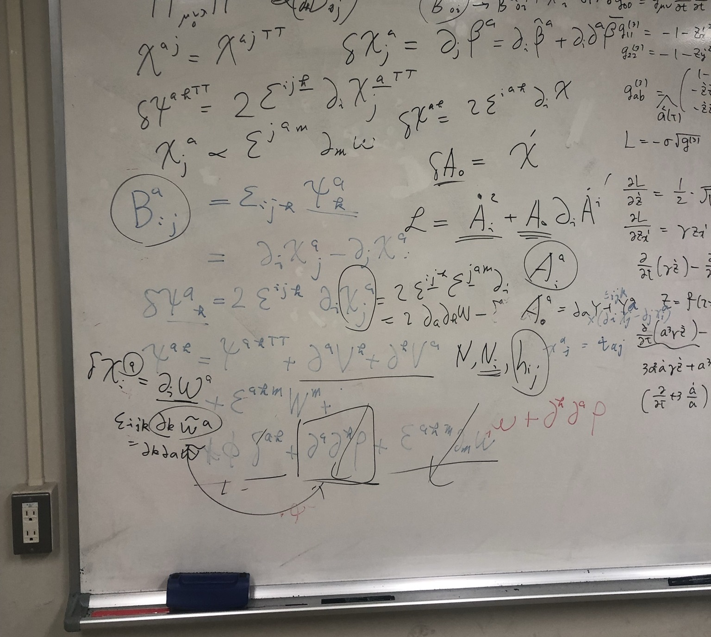

神户大学
神户大学位于日本兵库县神户市。我所在的研究室处于六甲山上的六甲台校区。六甲山以能俯瞰神户市百万夜景而闻名。所以处于山上的神大经常能受到野猪的关顾，但由于它们大多在夜晚活动，我没能捕捉到清晰的照片。理论物理的研究组大多都挤在一间大办公室里，里面分成了很多小办公室，同时还也提供了一些公共区域，供教授和学生工作。

↑↑↑ 神大理学研究科B栋后面
神大和宇宙论研究室提供了充分的研究时间和自由，这对于跨方向的我来说非常友好，我能够自由地探索自己喜欢的课题，但有时候兴趣过于广泛并不是什么好事，所以我还是需要暂时将注意力集中在一个点上。总的来说，是一次非常深刻的探索，无论是对于自身还是物理研究。

↑↑↑ 研究活动在哪都大同小异，具有空间平移对称性